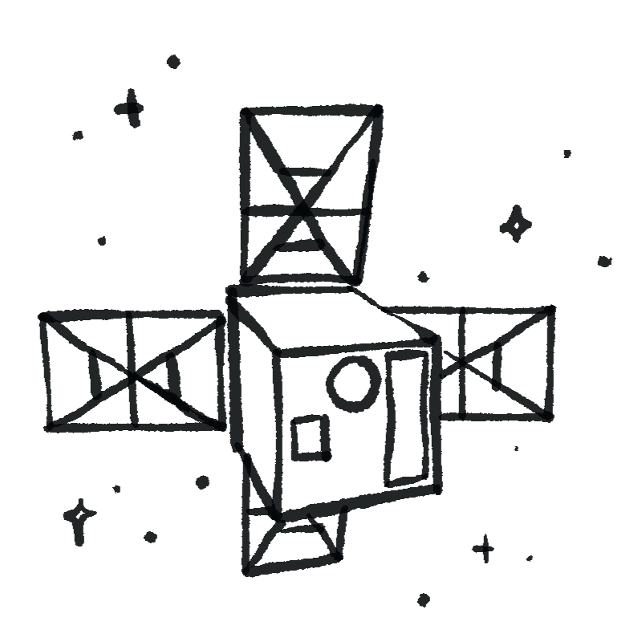
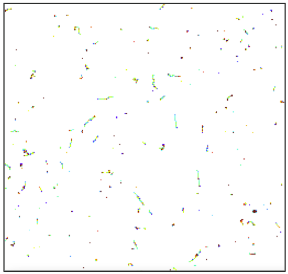
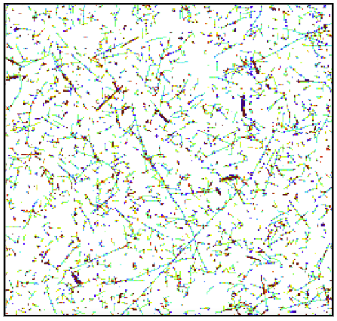
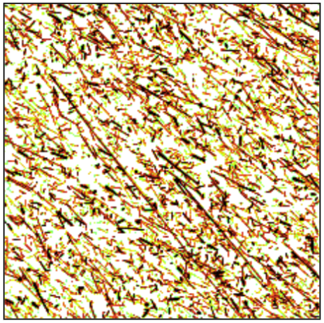

Activity 6
Make your predictions before the images are revealed. Lock them in, then compare three real detector images to see whether the evidence matches what you expected.
Question 1. The same detector runs for the same time at three locations: on the Earth surface, on an airplane, and on a satellite. Rank them from fewest to most visible tracks.
Question 2. If the track count does change with altitude, what is the most likely reason?
Write your reasoning in your own words.
Predictions locked. Now reveal and examine the three images.
Reveal the images once your predictions are locked. For each one, look at how many tracks you can see, how dense they are, and what shapes appear most often.
Track-shape reminder: dot = photon (X-ray or gamma), curly worm = electron (beta), round blob = alpha, long straight line = muon or other high-energy particle.



Lock in your predictions first.
| Location | Track density (sparse, medium, dense) | Most common track shape(s) | One specific thing you notice |
|---|---|---|---|
| A. Earth surface | |||
| B. Airplane | |||
| C. Satellite |
Drag to order the three locations from fewest to most visible tracks, based on what you actually see. Tap the arrow on mobile to move an item up.
1 = fewest tracks, 3 = most tracks.
How do the track shapes or lengths change between the three images?
Did the images match your prediction? Explain why the number of tracks changes with altitude, and what role the atmosphere plays. Then say whether your original prediction was supported, and if not, what you would change about your reasoning.
Why does a fair comparison between the three images require the same detector area, the same measurement time, and the same display settings?
Compare these with what you actually saw in the images.